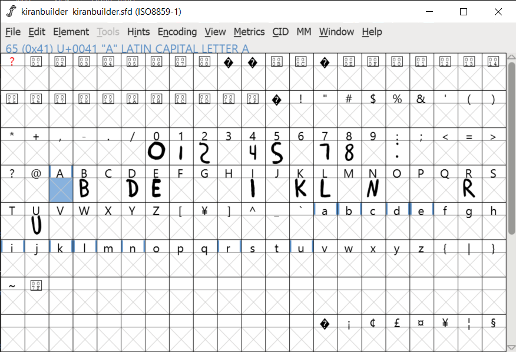
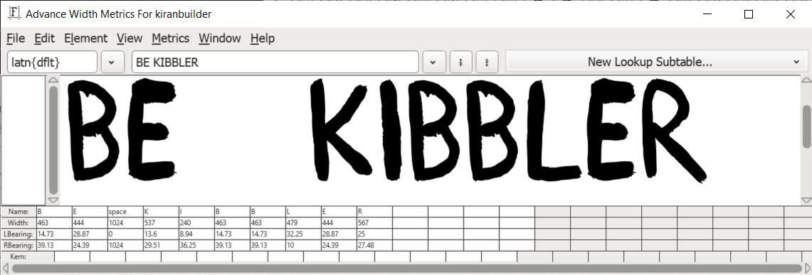
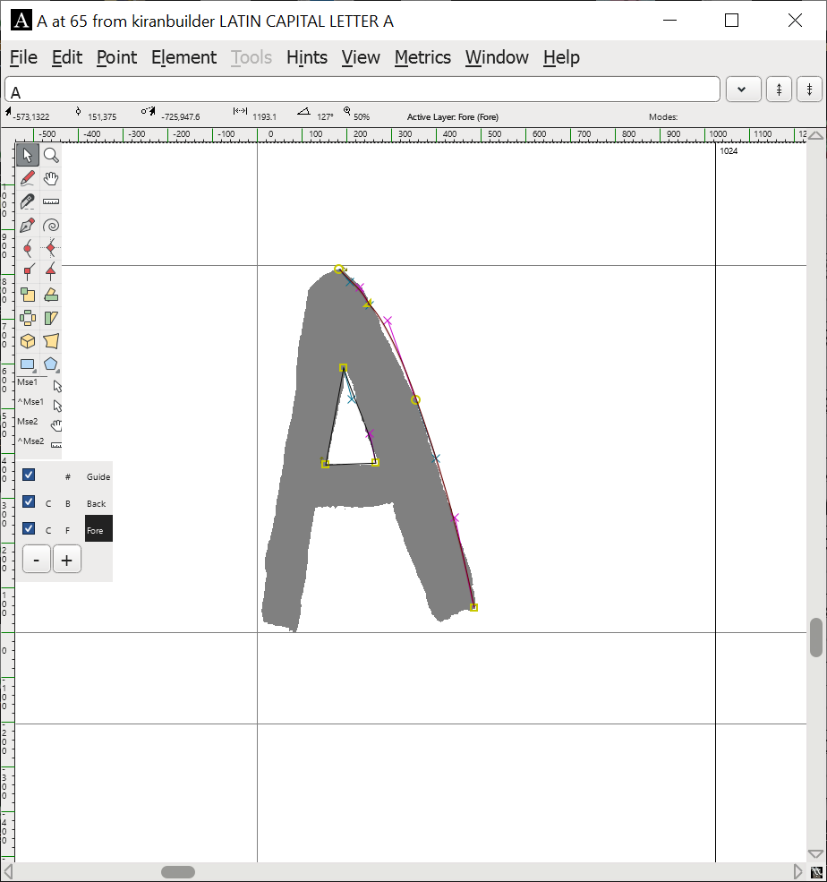

Font Workshop!
 by
alifeee
by
alifeee
- Why I like fonts
- How to make a font
- Design
- FontForge
Design is fun
A history of typefaces
A history of typefaces
A history of typefaces
A history of typefaces
A history of typefaces
How many fonts do you encounter in a day?
How about in a minute?
How many did you find?
Is it more than you expect?
How different are they?
How many do you think you see in a day?
Individuality is fun
Why I like fonts
I can use them!
Using personal fonts - how?
Computers are still customisable!
- Websites
- Documents
- Custom Font Defaults (Notepad, Browser)
- Printing & laser-cutting
- Digital greetings cards
How to design a font
It's easy to get lost in design
Font design can be a Trap, but I find it a rather pleasant one.
Practical definitions
- Characters & glyphs
- Splines, lines, & paths
- Points & the em-unit
http://designwithfontforge.com/
Design based definitions
- construction
- x- to cap-height proportion
- ascender height & descender depth
- width, width regularity, & variability
- weight & slant
- contrast & angle of contrast, weight distribution
- stems, joins, & bowls
- terminals, speed, & regularity
- flourish, serif, & decoration
https://fontforge.org/docs/tutorial.html
Practical guides for specific situations
- consistent stem widths, serifs, & heights
- making accented glyphs
- creating ligatures (fi, ll, etc.)
- metrics, spacing, & kerning
- generating a font
How to use FontForge
Context
FontForge Windows
- Overview ("Bitmap Window")
- Drawing ("Outline Window")
- Preview ("Metrics Window")
FontForge Windows: Bitmap
"The Overview"
FontForge Windows: Metrics
"The Preview"
spacing & kerning
FontForge Windows: Outline
"The Drawing"
baseline, cap height, x-height, ascender height, descender depth
How to make letter forms
- Digitally drawing them (in any vector graphics program)
- Modifying them
- Tracing them
Outline a letter form
Background layer for tracing images (File > Import)
Tracing with curve and corner bezier points
Element > Autotrace (more noise)
Element > Simplify > Simplify
Hold space for preview
Expand a path
Draw letter (touchscreen/mouse)
Element > Expand Stroke
Let's make a font!
- Sketch some letter forms!
- Try starting with "o" and "n"!
- Draw some more letters, like "adhesion" or "videospan"!
- Digitize them!
- Do you want to digitally draw letters, or trace them?
- What sort of "vibe" might you be going for?
- Do you want to have upper- and lowercase letters? Numbers? Symbols? It's ok just to have a subset.